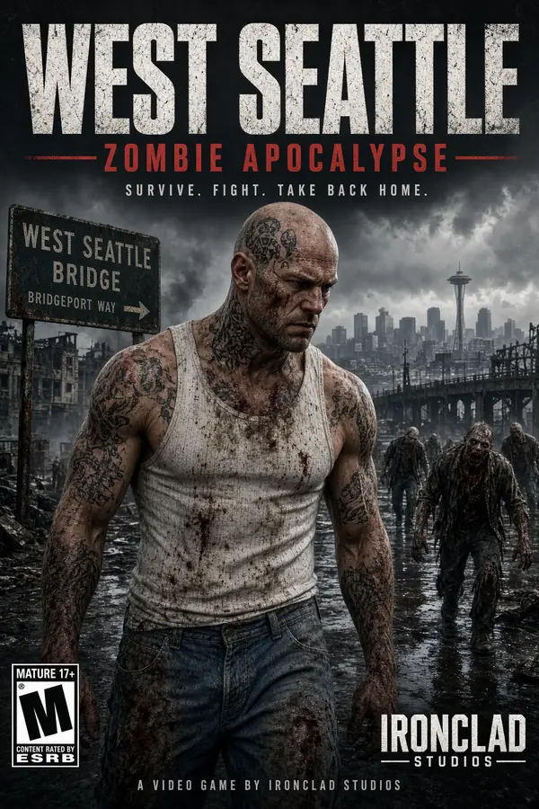
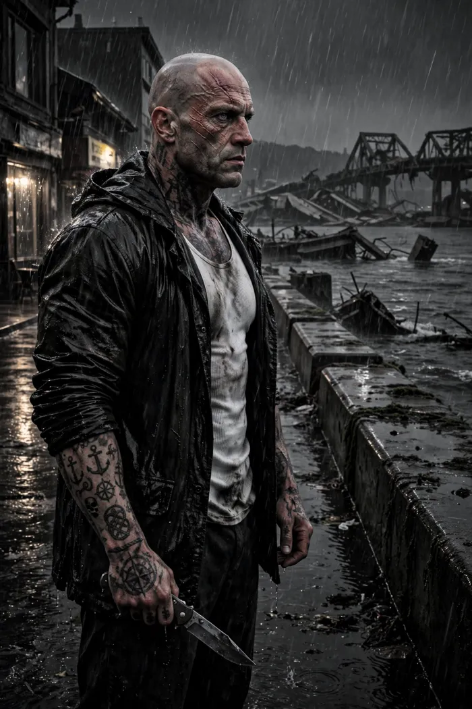
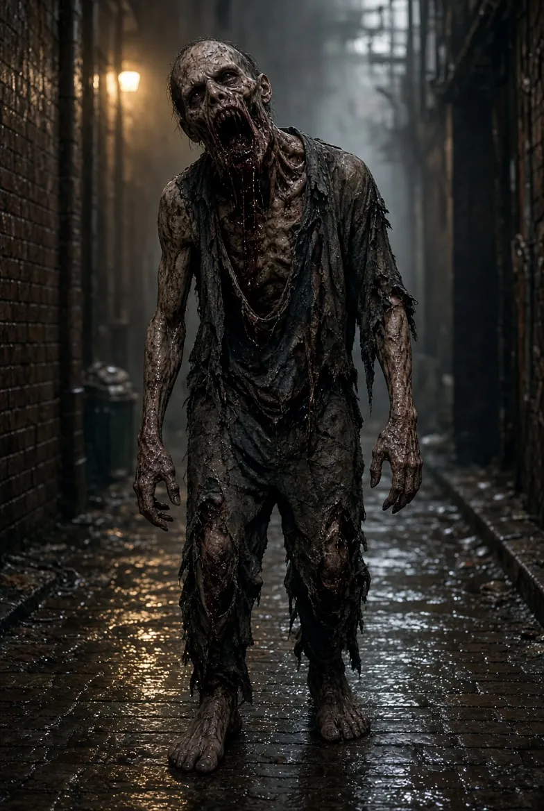
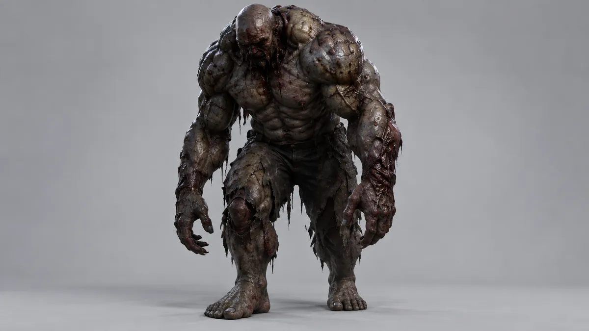
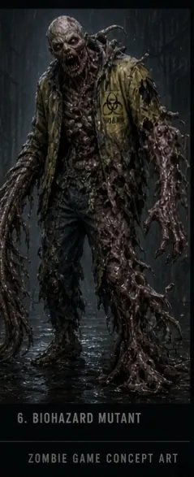
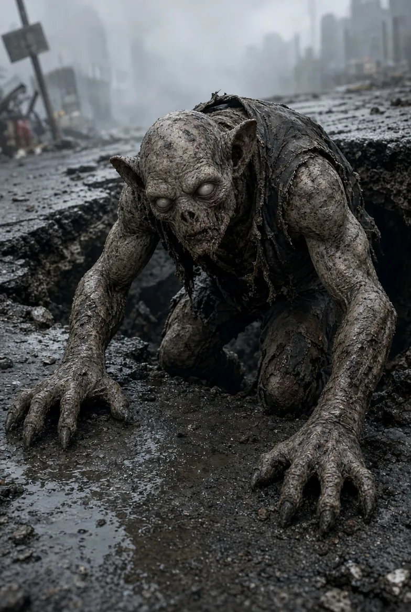
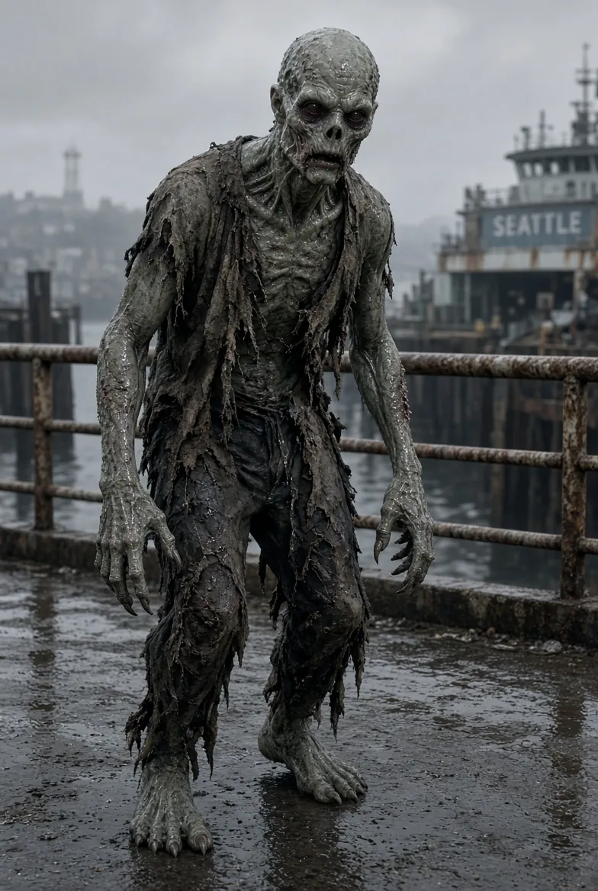

Xbox is the console target
We're focusing SOLACE on PC and Xbox, built on Unreal Engine 5.6.
In development · Unreal Engine 5.6 · PC & Xbox
Every zombie game punishes the bite. SOLACE plays it — get bitten and the whole game flips: inverted factions, rerouted missions, endings that share nothing with the unbitten path. All of it in a 1:1 West Seattle, street by street, from Alki to the broken bridge. Get Missy. Get past Danny. Get out.
SOLACE is a dark, gritty open-world zombie survival game set in a 1:1 recreation of West Seattle. Rain, fog, wet streets, sodium lights. No neon.
You are Ian: bald, tattooed, tank top and jeans, a man of few words. Your fight is mostly up close: fists, found melee weapons and an ASP baton. Guns are rare. Every shot counts.
About 15 hours of main story and about 45 hours of side content. Roughly 60 hours in total.


The complete story in one reader, plus the six volumes:
Each type has its own day, dusk and night behavior. When night falls, the streets change hands.

Slow, dense packs in the shade. Grab-bite on contact.
Its scream alerts everything nearby. Kill it first.
Charges in a straight line. Sidestep it into a wall.
Shadows you across parallel roofs and ambushes from behind.
Stands in puddles, unseen in the rain until it's close.
Seaweed-draped. Rises from the Alki and Duwamish shoreline.
A Delridge drainage brute. Its mud slam slows you down.
Toxic spit, and it explodes when it dies. Found around Westwood and the clinics.
A pair under the broken deck. Kill one and the other goes berserk.
Boss zombie — an original SOLACE design.
Boss zombie — an original SOLACE design.
Boss zombie — an original SOLACE design.




Brutal close combat with an ASP baton and improvised weapons. Guns are very rare.
Rooftops, fences and fire escapes across a real neighborhood.
The threat cycle changes who owns the streets, under Seattle rain and fog.
Spread across all 11 districts, around a ~15-hour main story.
Every district has a mini boss to break and survivors to protect.
Beat the game to play as Chris, Danny, Missy and Sara, each with unique abilities.
Platform plans may change during development. No release date has been announced.
We're focusing SOLACE on PC and Xbox, built on Unreal Engine 5.6.
We've signed up for the ID@Xbox program. The game concept still has to be submitted and reviewed.
Once you finish the story, Chris, Danny, Missy and Sara become playable, each with unique abilities and strengths.
The full list of 120 side missions is planned out across all 11 districts.
We've added Fauntleroy & Seaview and W Marginal Way/Duwamish, along with the steel yard and the bridge strip.
For press, partners, collaborators and playtesters: ian-solace@zohomail.com · 206-531-8115